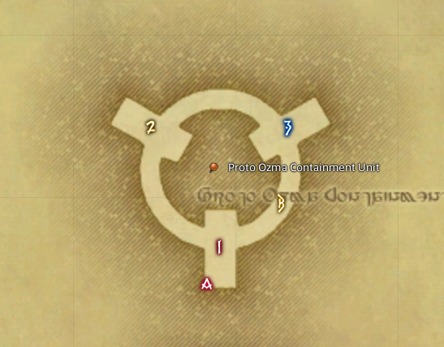

Ozma
- Remove tank marker.
- Setup markers at Ozma.
/p we are on platform 1, we go to the blackhole buffer on platform 1, we place meteors on 1 and A- Ready check.
- Kill Ozma.

Host
- Wait for cutscenes and ressing.
- Tell party leaders to place markers.
Once everyone is up and people are done watching cutscenes
- You can check ba-chat for some visuals
Meteors
- 2 players per platform will get meteors.
- You need to take the meteors to the 1 and 2 markers, that is to the back and to the right.
- There should only be 1 meteor per marker, so you need to look where the other person is going, and go to the other marker.
Acceleration Bombs
- Acceleration Bombs go out in pyramid shape.
- You can see how it looks in ba-chat.
- It is a debuff with a timer.
- Once the timer reaches 0, it explodes if you are doing anything at all.
- So if you get it just un-target the boss and do nothing.
- If you get both an Acceleration Bomb and a meteor, focus on the meteor mechanic.
- If you have time, it is a good idea to move to the ring, as you can't get a meteor if you are on the ring.
Ask for main tanks.
Ask for off tanks.
- If you are a main tank, please turn your tank stance on.
- If you are an off tank, please turn your tank stance off.
- If you are a main tank you can switch to a Guardian now.
- All tanks can switch to magia auto defensive, unless you know what you are doing.
Off tank orbs
- If you are an off tank, once Ozma changes to cube shape, you need to pop the 2 orbs that spawn on the ring to your right.
- You can use mitigation, but invuln will not work.
- The rest of us will hug Ozma close when orbs go out.
Ask for bleed baiters
- Once pyramid phase starts you go to the back.
- You need to move to the front for the meteor damage and you need to move for a Ozmashade movement.
- Just go to the back again as soon as you are done moving for those mechanics.
Ready checks
- We can do some ready checks.
- Check your food buff.
- If you are a dps or healer you can spin your magiawheel to earth.
- If you are a tank you can spin your magiawheel to lightning.
Once everyone is ready
- Okay, 2 things.
- First do not cut corners, you can fall of and you will die if you do.
- Second do not target Ozma at any time until we pull, if you prepull you will most likely get yourself and other people killed.
Jump down
- We can jump down and you can follow your party leaders to your blackhole buffer.
- Throughout the fight I will tell you to go to your blackhole buffers, which is the blue circle your party leader will show you to.
- Once your party leader is happy, you can return to your main platform.
All ready
- Start 50 second countdown.
- You can hand out bravery if you have it.
- Tanks can pull on 4, and ranged and casters can use limit breaks on 7.
After killing Ozma
- There is a treasure coffer on the main platform.
- You can now jump down without dying.
- If this was your first clear, you can claim your Ozma mount from the achievement window. You will have to leave Hydatos to get it.
- Before you leave you might want to take the exit from the Arena, as there is some more story there.
Inform about upcoming runs.
After the run
- Fill out run sheet.
- Clean up #announcements.
Timeline
- Star Shape
- Knockback
BlackholeSingle MovementDouble Movement- Star
- Meteors
- Knockback
- Shade + Knockback
BlackholeDouble Movement
- Cube
- Orbs
- Stackmarker + Holy Knockback
- Shade + Stackmarker + Holy Knockback
BlackholeDouble Movement
- Triangle
- Acceleration Bombs
- Meteors
- Shade + Acceleration Bombs
- Stackmarker
BlackholeDouble Movement